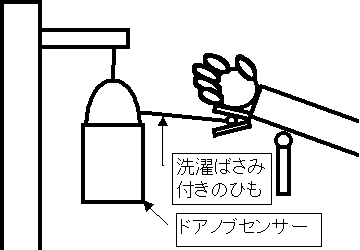
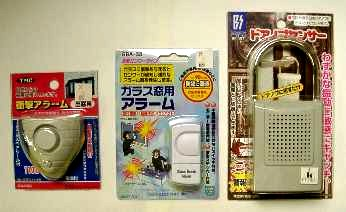

かならずお読みください→
犬が鳴く
病院にはナースコールがあります．お身体が不自由なために，通常の押しボタンスイッチを使えない方向けに，特殊なスイッチもあります．
しかし，在宅ではどうでしょう．家の中にいるご家族を呼びたい．隣で眠っているご家族を起こしたい．ここで説明するのは，市販の防犯センサを利用して，こんな場合に役に立つかもしれない工夫をご紹介します．
いきさつ
その方は，在宅のALSの方でした．頬でタッチスイッチを使って伝の心を操作されていました．それまではタッチスイッチを３回操作してブザーを鳴らしてご家族を呼んでいました．しかし，徐々に病状が進むにつれて，いざというときこの操作が確実にできるか心配になりました．もっと簡単な動作で，一発で隣で寝ている家族を起こす方法はないか？今のままでは心配で心配で夜も眠れない．とのことでした．（伝の心での会話）
当時，体調も悪く，ほとんど睡眠をとっておられないとのお話で，精神的にも滅入っているようでした．ご家族とも相談のうえ，何とかして早く解決しようと決めました．
家族を夜中に起こしたい時は，かなりの緊急事態です．そんなせっぱつまったときにも，確実にできる動作は何かをご本人と相談しました．その結果，ベッド柵の上に乗せている腕を，マットレスの上にぽとりと落とすことなら，苦しくてもなんとかできるということになりました．
早速，近所のホームセンターに行き，現状と目的を結びつける道具を探しました．
その結果，市販の防犯センサーを３種類購入しました．
その内の１種類（選定の詳細は後述）を図のように使うことで，目的を達成でき，安心して眠れるようになったそうです．

購入した防犯センサーを上の写真に，概要を下の表にしめします．
番号
上の写真
商品名
メーカ名
型番
使用乾電池
参考価格
１
左
衝撃アラーム出窓用 豊光（株）
ＢＳ－９５３ Ｌ１０２８（１２Ｖ）
９８０
２
中
ガラス窓用アラーム （株）オーム電気 ＧＢＡ－３８ ＬＲ４４（３個）
６８０
３
右
ドアノブセンサー 豊光（株）
ＢＳ－９５７
角形９Ｖ積層電池
１９８０
１と２はガラスに貼り，窓を破壊する衝撃を感知して，電子音を鳴らします．３はドアノブにつるし，ドアを開けたときの振動や衝撃を感知し，電子音（又は，犬の鳴き声）をならします．（追記：２番の製品はメーカのサイトから消えています．製造が中止されたようです．他はデザインが変更されたようです．04年7月6日）各々の感度について簡単に試してみました．１と２は，ベッドから畳の床に落ちれば，問題なくなりますが，布団の上では，ならない場合もありました．３は，方式が違うのですが，ならさないように机から持ち上げるにはかなり注意が必要なくらい敏感です．
またこれらの商品の性格上，音量は十分すぎるほど大きいです．必要に応じて，ガムテープでおおい，音量を小さくします．
取り扱いは，いずれもきわめて簡単で，スイッチを入れておくだけです．機械モノの苦手な方でもまず問題なく使えると考えられます．３種類の防犯センサはいずれも電池を使用します．特に家庭で使用するには，電池の交換も考慮する必要があります．１の電池は，通常の販売ルートでは入手がきわめて困難であること（基本的に使い捨ての商品などでしょうか？），２の電池はカメラ店などで購入できること，３の電池は，コンビニなどで購入できることがわかりました．
電池の寿命は一概に判断できません．防犯センサですからいずれも相当の電池寿命があるとは思いますが，泥棒の頻度と（ナース）コールの使用頻度は，まるで比較になりません．ですから，早めの電池交換が必要です．
以上から，３の商品を選択しました．しかし，３は，垂直に保たないとすぐに鳴り出す問題（特徴）があります．これは，台からぶら下げることで解決しました．あとは，ひもの長さと，洗濯ばさみでつける位置を調整することで，微調整ができました．
（ナース）コールとして使用するには、いくつか問題点もあります。 しかし訪問先で、『今夜眠れるように何とかしてくれ』となって短時間で何とかするためにはこのような方法も役に立つ場合もあると考えられます。どうぞ参考になさってください。
2018/3/19 UTF-8 に変更
04/07/06 追記
03/05/15 公開
研究企画課リハ工学科にもどる